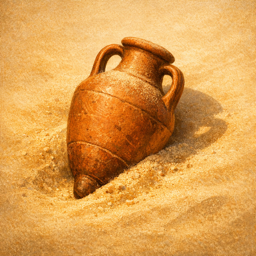
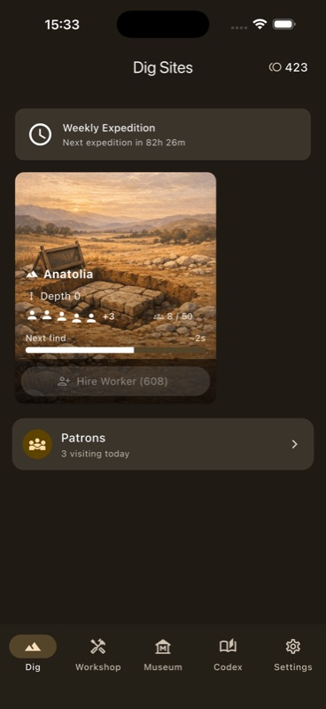
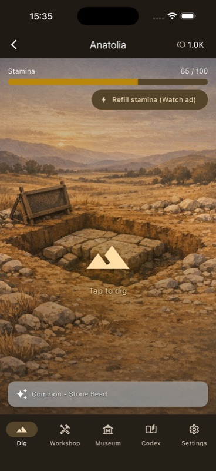
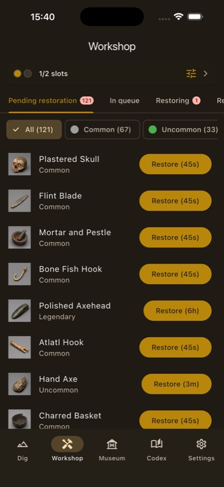
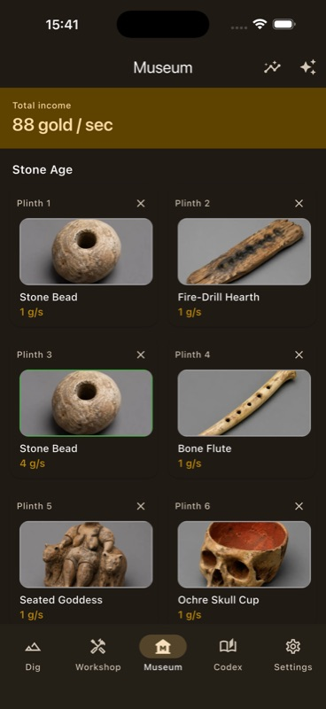
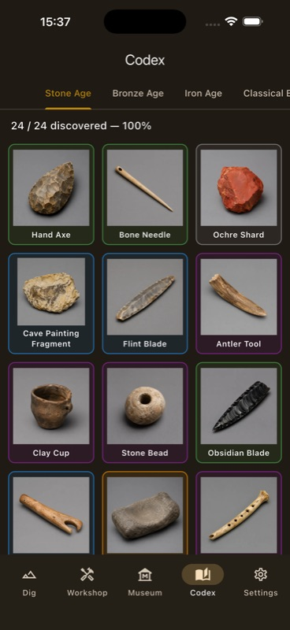
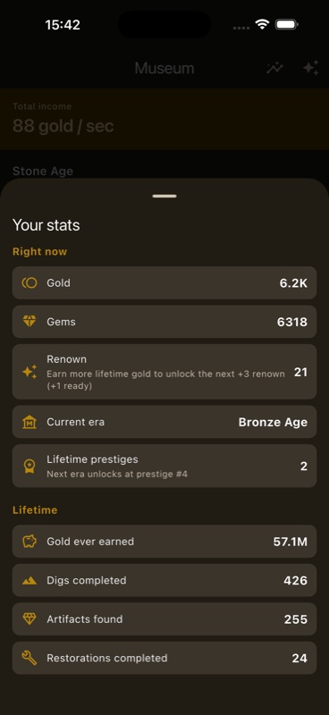
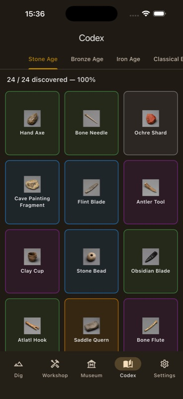

Idle Archaeologist
Dig. Restore. Display. Repeat.
Now available on App Store & Google PlayRun a museum, the slow way. Send workers to dig sites, watch them turn rocks into real artifacts, restore the finds at your workshop bench, and put them on display so patrons fund the next expedition. It plays while you're away — come back to a fuller museum and a thicker wallet.
What makes it different
Real artifacts
Every find is a real object from a real era — Stone Age beads, Bronze Age tools, Iron Age blades, Classical statuary, Medieval scriptoria. Photographed, not generated.
Five eras to unlock
Prestige resets your dig but keeps your renown. Each loop opens a new era with new sites, new artifacts, and bigger numbers.
Cosy, never grindy
No timers in your face, no daily login wall. Tap to dig when you feel like it; let it idle when you don't.
Honest free-to-play
No forced ads. Optional Patron Pass subscription doubles offline gold; everything else stays unlocked through play.
How a session plays
Pick a dig site, hire workers
Each region — Anatolia, the Nile, the Aegean, and beyond — runs on its own. Hire workers, deepen the dig, and watch the next-find timer tick down.


Tap to dig — or just let it run
Stamina-gated active digs hand out bigger finds; idle workers grind the long tail. Want a refill in a hurry? Watch a rewarded ad — never forced, always optional.
Restore at the workshop
Every artifact comes out of the ground rough. Queue it on a workshop bench and the team brings it back to display quality — Common in seconds, Legendary in hours.


Display them, earn passive gold
Drop a restored artifact on a museum plinth and patrons start paying to see it. Higher rarity, higher gold-per-second; matching eras compound the bonus.
Fill the codex
Every find is logged in a per-era catalogue. Track your discovery rate, see what you're still missing, and chase the legendaries that haven't shown up yet.


Prestige into the next era
When you've outgrown an era, prestige resets your dig and converts what you earned into permanent renown. The Stone Age becomes the Bronze, becomes the Iron, becomes the Classical…
The five eras
Each era brings its own dig sites, its own artifact catalogue, and its own museum room. Stone Age opens with hand axes and bone needles; Medieval ends — for now — at a monastery scriptorium.
More from the museum floor

Scroll for more →
At a glance
| Genre | Single-player idle / incremental, museum-curation theme |
| Platforms | iOS & Android (Flutter, single codebase) |
| Languages | English and Turkish (full UI) |
| Session length | Designed for short check-ins; happily idles between sessions and pays out offline progress. |
| Eras at launch | Five — Stone, Bronze, Iron, Classical, Medieval |
| Pricing | Free to download. Optional gem packs and a Patron Pass auto-renewable subscription. No paywalled content. |
| Ads | Optional rewarded ads (stamina refill, gem boost) plus an occasional interstitial when a session closes. The Patron Pass removes interstitials. |
| Connectivity | Plays offline. Optional cloud save sync via your store account. |
| Accessibility | Larger text, bold text, reduce motion, and colourblind-safe palette respected. Numbers always carry a unit label. |
Frequently asked
How much does it cost?
Idle Archaeologist is free to download and free to play to the end. Optional gem packs and a Patron Pass auto-renewable subscription are offered, but every era, every artifact, and every prestige loop is reachable through normal play.
What is the Patron Pass?
An optional monthly subscription that doubles your offline gold income, removes session-close interstitial ads, and grants a small daily gem stipend. Renewal is handled by the App Store or Google Play; cancel any time from your store account.
Are there ads?
Yes, two kinds — both deliberately light. Rewarded ads are entirely optional: tap them to refill stamina or get a small gem bonus. Session-close interstitials show occasionally between long sessions; the Patron Pass removes them.
Do I need an internet connection?
No. The full game runs offline. An internet connection is only used for cloud save sync (optional, via your store account), rewarded ads, and the occasional interstitial.
Do I need an account?
No account or sign-up is required. Cloud save uses the Apple ID or Google Play account already on your device.
Is there pay-to-win?
No. Gems speed things up — they don't unlock content. The Patron Pass is a quality-of-life subscription, not a power one. The game is designed to be finished, not farmed.
Is my data tracked?
The game uses Crashlytics in release builds to report crashes, AdMob to serve ads, and basic analytics on app interactions. We do not collect your name, email, location, or contacts. Full details on the Privacy page.
Where can I get it?
It's live on both the App Store and Google Play as of May 2026. Free to download, free to play to the end.
Get it
Idle Archaeologist is live on both stores.
Grab it on the App Store or Google Play. Questions or bugs? The Support page is the fastest way to reach the developer.